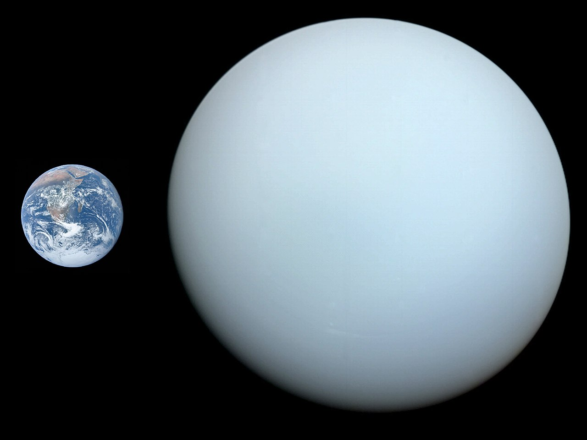
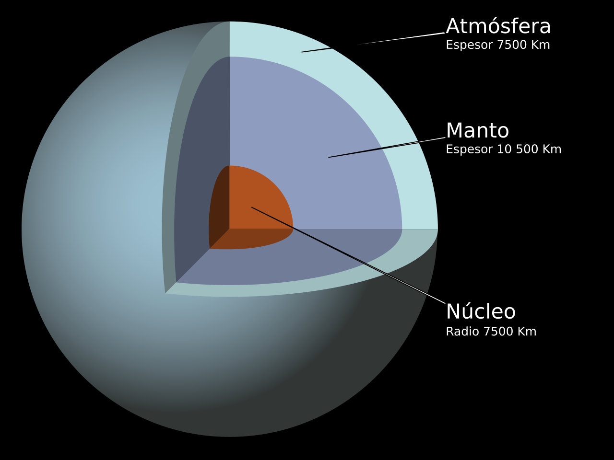

Urano es el séptimo planeta del sistema solar, el tercero de mayor tamaño, y el cuarto más masivo. Se llama así en honor de la divinidad griega del cielo Urano (del griego antiguo Οὐρανός), el padre de Crono (Saturno) y el abuelo de Zeus (Júpiter). Aunque es detectable a simple vista en el cielo nocturno, no fue catalogado como planeta por los astrónomos de la antigüedad debido a su escasa luminosidad y a la lentitud de su órbita.[13] William Herschel anunció su descubrimiento el 13 de marzo de 1781, ampliando las fronteras entonces conocidas del sistema solar por primera vez en la historia moderna. Urano es también el primer planeta descubierto por medio de un telescopio.
Urano es similar en composición a su vecino Neptuno, y los dos tienen una composición diferente de los otros dos gigantes gaseosos (Júpiter y Saturno). Por ello, los astrónomos a veces los clasifican en una categoría diferente, los gigantes helados. La atmósfera de Urano, aunque es similar a la de Júpiter y Saturno por estar compuesta principalmente de hidrógeno y helio, contiene una proporción superior tanto de «hielo»[nota 4] como de agua, amoníaco y metano, junto con trazas de hidrocarburos.[9][nota 5] Posee la atmósfera planetaria más fría del sistema solar, con una temperatura mínima de 49 K (−224 °C). Asimismo, tiene una estructura de nubes muy compleja, acomodada por niveles, donde se cree que las nubes más bajas están compuestas de agua y las más altas de metano.[9] En contraste, el interior de Urano se encuentra compuesto principalmente de hielo y roca.
Como los otros planetas gigantes, Urano tiene un sistema de anillos, una magnetosfera y numerosos satélites. El sistema de Urano tiene una configuración única respecto a los otros planetas puesto que su eje de rotación está muy inclinado, casi hasta su plano de revolución alrededor del Sol. Por lo tanto, sus polos norte y sur se encuentran donde la mayoría de los otros planetas tienen el ecuador.[14] Vistos desde la Tierra, los anillos de Urano dan el aspecto de que rodean el planeta como una diana, y que los satélites giran a su alrededor como las agujas de un reloj, aunque en 2007 y 2008, los anillos aparecían justo de lado. El 24 de enero de 1986, las imágenes del Voyager 2 mostraron a Urano como un planeta sin ninguna característica especial de luz visible e incluso sin bandas de nubes o tormentas asociadas con los otros gigantes.[14] Sin embargo, los observadores terrestres han visto señales de cambios de estación y un aumento de la actividad meteorológica en los últimos años a medida que Urano se acerca a su equinoccio. Las velocidades del viento en Urano pueden llegar o incluso sobrepasar los 250 m/s (900 km/h).[
Historia

Descubrimiento:
Urano ya se había observado en muchas ocasiones antes de su descubrimiento como planeta, pero generalmente se había confundido con una estrella. La observación más antigua de la que se tiene referencia data de 1690 cuando John Flamsteed observó el planeta al menos seis veces, catalogándolo como «34 Tauri». El astrónomo francés Pierre Charles Le Monnier, observó a Urano al menos en doce ocasiones entre 1750 y el 1769,[16] e incluso en cuatro noches consecutivas. Para el año 1738 el astrónomo inglés John Bevis dibujó al planeta Urano como tres estrellas en posiciones sucesivas, en su atlas «Uranographia Britannica», dichas observaciones fueron hechas entre los meses de mayo y julio de 1738, sin embargo Bevis no detectó los rasgos de planeta. A raíz de las distintas observaciones hechas a estas fechas se les conoce en la Astronomía como la era de los predescubrimientos.
Sir William Herschel observó el planeta el 13 de marzo de 1781 mientras estaba en el jardín de su casa ubicada en 19 New King Street en el pueblo de Bath (Condado de Somerset), Gran Bretaña,[17] aunque en un principio (el 26 de abril de 1781) reportó que se trataba de un «cometa».[18] Herschel «se dedicó a hacer una serie de observaciones sobre el paralaje de las estrellas fijas»,[19] utilizando un telescopio diseñado por él mismo.
Escribió en su diario «En el cuartil cerca de ζ Tauri […] o bien [una] estrella nebulosa o quizá un cometa».[21] El 17 de marzo escribió, «Busqué el cometa o estrella nebulosa y he descubierto que es un cometa puesto que ha cambiado de lugar».[22] Cuando presentó su descubrimiento en la Royal Society, continuó afirmando que había descubierto un cometa a la vez que lo comparaba implícitamente con un planeta:
Órbita y rotación

Urano da una vuelta al Sol cada 84.01 años terrestres. Su distancia media con el Sol es de aproximadamente 3000 millones de kilómetros (unas 20 UA) (2 870 990 000 km). La intensidad de la luz del Sol en Urano es más o menos 1/400 que en la Tierra.[42] Sus elementos orbitales fueron calculados por primera vez en 1783 por Pierre-Simon Laplace.[43] Con el tiempo, empezaron a aparecer discrepancias entre las órbitas observadas y las que se habían predicho, y en 1841, John Couch Adams fue el primero en proponer que las diferencias podían deberse a la atracción gravitatoria de un planeta desconocido. En 1845, Urbain Le Verrier comenzó una búsqueda independiente en cuanto a las perturbaciones orbitales de Urano. El 23 de septiembre de 1846, Johann Gottfried Galle encontró un nuevo planeta, llamado después Neptuno, casi en la misma posición que había predicho Le Verrier.[
Su período sinódico es de 370 días, de modo que, cada año, la oposición se produce con unos 5 días de retraso respecto al año anterior. Visto desde la Tierra el movimiento aparente de Urano respecto del fondo de estrellas es directo excepto cerca de la oposición. Urano parecerá entrar en movimiento retrógrado unos 76 días antes de la oposición y permanecerá así durante un período de aproximadamente 152 días,[45] moviéndose aparentemente hacia atrás un ángulo de 4° antes de volver al movimiento directo.
El período rotacional del interior de Urano es de 17 horas y 14 minutos. Sin embargo, al igual que en todos los planetas gigantes, la parte superior de la atmósfera experimenta vientos muy fuertes en la dirección de la rotación. De hecho, en algunas latitudes, como por ejemplo alrededor de dos tercios de la distancia entre el ecuador y el polo sur, las características visibles de la atmósfera se mueven mucho más rápido, haciendo una rotación entera en tan poco tiempo como 14 horas.[